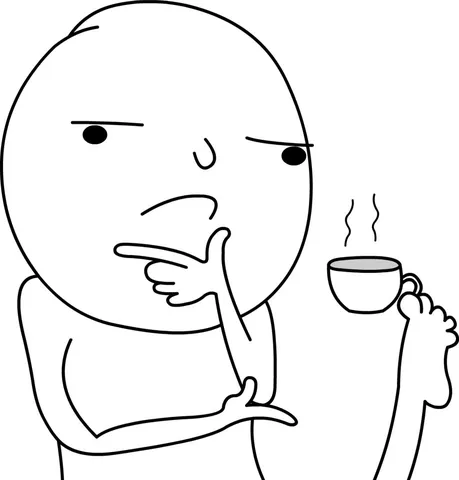

Недавно был на тренинге по принятию решений. И он натолкнул меня на некоторые мысли, которыми хочется поделиться (часть из них я вынес с самого тренинга, часть просто всплыли ассоциативно). Вообще на эту тему уже кое-что писал:
• про интуицию
• про бездействие
• про неприятие потерь
- почитайте, если еще не.
А к этому добавлю следующее:
1. Каждый день наш мозг принимает десятки тысяч решений. Из них пару сотен - осознанно. Принятие решений стоит мозгу энергии, а мы склонны эту энергию экономить. Так что лимит на количество принятых решений за день - существует. Если вы вечером после насыщенного дня просто не способны решить, что вы хотите на ужин - это нормально.
2. Несмотря на то, что порой бездействие приносит больше ущерба, чем неверный выбор, в некоторых ситуациях отсутствие выбора - тоже решение. Приведу пример из практики. Возьмем алгоритм диспатча - назначение курьеров на заказы. Мы солвим двудольный граф, например венгерским алгоритмом. Нам нужно поскорить возможные ребра этого графа по какой-то формуле. Оказывается, если добавить искусственно ребро "отложить назначение до следующего розыгрыша", его скор окажется выше, чем у неудачных назначений в моменте, а статистически в течение разумного срока найдется назначение получше.
3. Перед принятием решения стоит убедиться, что у вас достаточно опций (как обычно, оптимально - 3-5). Но тут тоже есть ловушка - проверяйте инвариантность опций. Точно ли вы покрываете все пространство решений, а выбор что-то в реальности изменит? Лучше явно рассмотреть и отбросить больше опций и их последствий, чем искусственно сузить рамки. Тут еще советуют рисовать пресловутые матрицы 2х2 (загуглите, если не понимаете, о чем речь). По сути - важно соблюсти принцип Mutually Exclusive, Collectively Exhaustive.
4. Стратегия - это когда вы принимаете решения заранее, до наступления событий. Вашу стратегию можно считать эффективной, если по ходу ее реализации принимаемые решения совпадают с априорными. А для этого можно ветвить стратегию в соответствии с упомянутым принципом mece, уметь откладывать момент принятия решений до оптимального, и принимать их осознанно (не попадая в когнитивные ловушки типа подмены вопроса и прочих).
5. И напоследок забавная байка. На какой-то встрече больших и умных людей в некоторой компании Х в адженде было 2 вопроса: 1) запуск новой производственной линии, 2) стоит ли сделать у офиса навес для велосипедов. В итоге 55 минут из часовой встречи состав участников обсуждал навес. Потому что это решение проще, понятней, меньше выталкивает из зоны комфорта. Мораль сами поймете.
